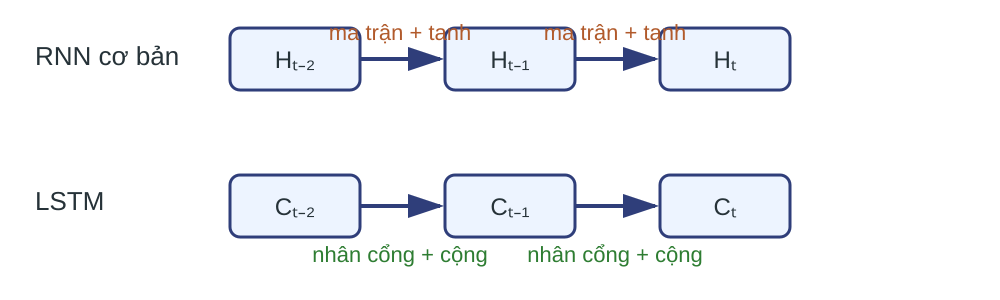
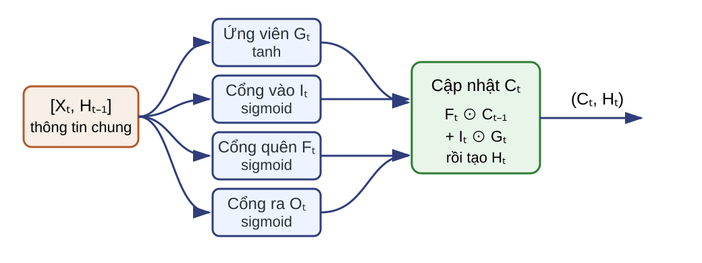
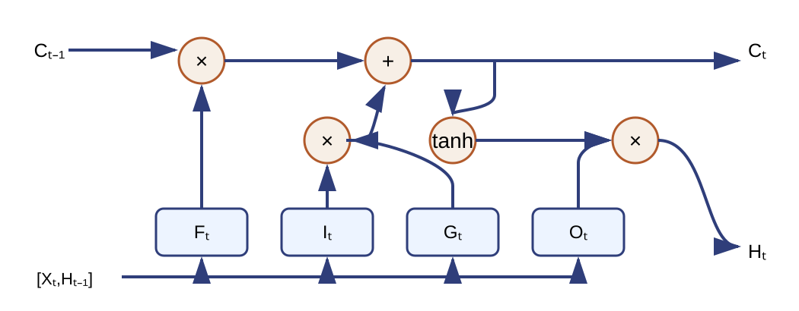
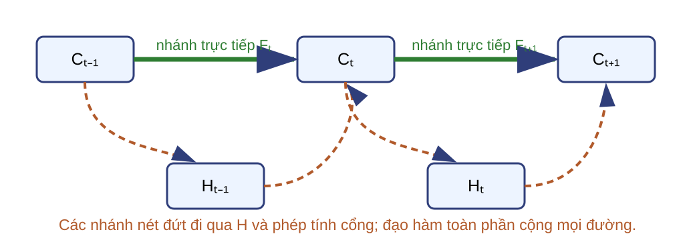
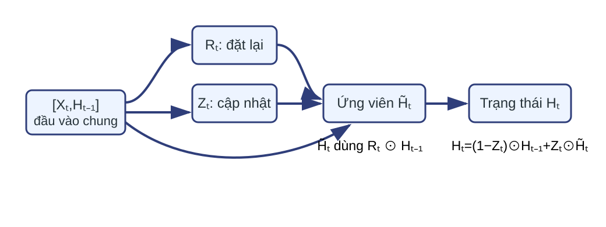
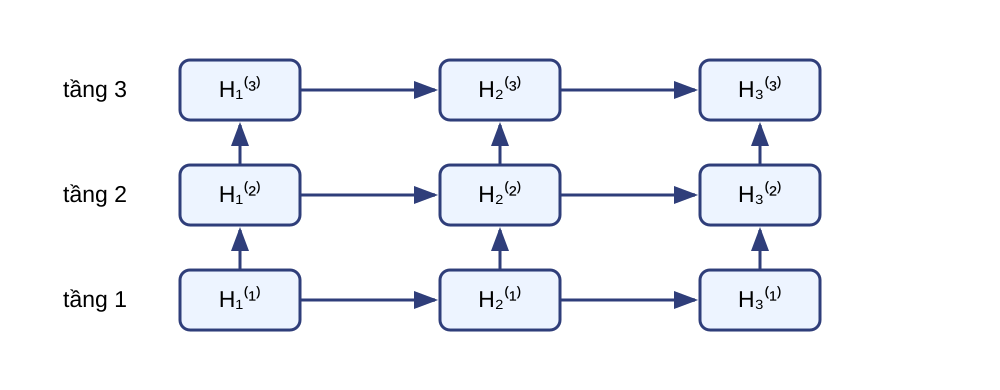
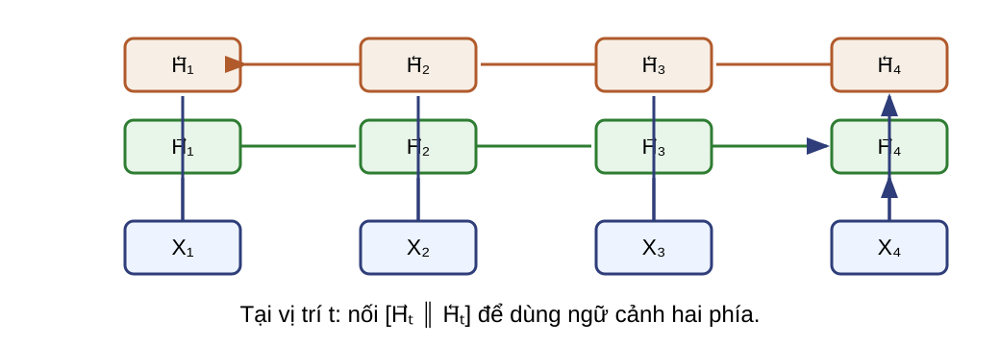
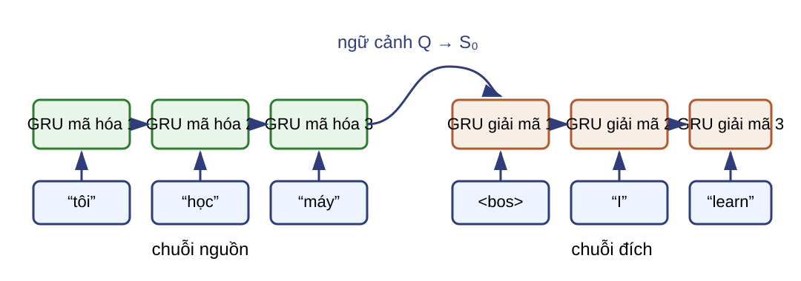
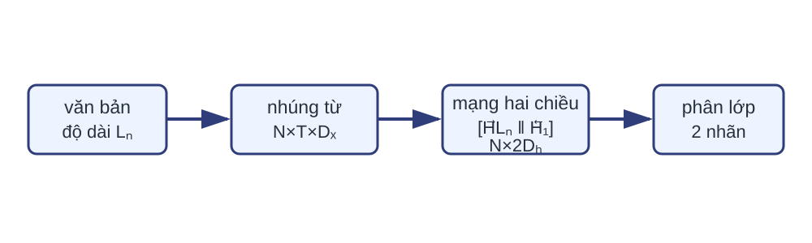

Các kiến trúc mạng nơ-ron truy hồi hiện đại Bài 08 · Học sâu Học kỳ 1 · Năm học 2026–2027
Mạng nơ-ron truy hồi (RNN), bộ nhớ ngắn dài hạn (LSTM) và đơn vị truy hồi có cổng (GRU) xử lý trạng thái theo thời gian.
Bài bắt đầu từ đường đạo hàm dài của RNN cơ bản. LSTM và GRU thay đổi phép cập nhật trạng thái, không thay bản chất dữ liệu chuỗi.Nguồn: DOCX, Buổi 8; lec14_rnn, tr. 25–33; GT, PDF 226–232.
Kết quả học tập LLO15 Trình bày cấu trúc và cơ chế của LSTM, GRU.
LLO16 Phân tích ưu điểm và giới hạn khi xử lý phụ thuộc dài hạn.
Tiên quyết: RNN cơ bản, lan truyền ngược theo thời gian (BPTT), tích Jacobian, sigmoid, tanh, phép nhân ma trận theo lô, phát tự động (broadcasting) và tích Hadamard.
Sản phẩm học tập gồm một bước tính có kích thước đúng, một phân tích đường đạo hàm và một lựa chọn kiến trúc có điều kiện.Nguồn: DOCX, Buổi 8.
Đường đạo hàm dài dễ co hoặc giãn 
RNN cơ bản lặp ma trận và đạo hàm kích hoạt; LSTM thêm một đường cập nhật cộng có cổng.
Tích Jacobian của Bài 07 có thể co hoặc giãn qua nhiều bước. Đường trạng thái ô của LSTM tạo thêm một nhánh truyền tín hiệu, nhưng các cổng vẫn có thể làm nhánh này suy giảm.Nguồn: Bài 07; lec14_rnn, tr. 25; GT, PDF 226.
Phụ thuộc xa cần một đường lưu giữ có điều kiện Giữ Thông tin cũ cần đi qua nhiều bước với ít biến đổi.
Cập nhật Thông tin mới chỉ được ghi khi phù hợp với ngữ cảnh.
Cùng một trạng thái phải vừa bền qua thời gian, vừa phản ứng với đầu vào mới.
Một đường luôn giữ nguyên sẽ không thể quên nhiễu. Một đường luôn ghi mới sẽ làm mất nội dung cũ. Cổng học hai quyết định này từ dữ liệu.Nguồn: GT, PDF 226–229.
Trạng thái ô tách lưu giữ khỏi đầu ra Trạng thái ô $C_t$ Đường tích lũy nội bộ theo thời gian.
Trạng thái ẩn $H_t$ Phần trạng thái được đưa ra cho tầng khác.
Hai trạng thái cùng kích thước nhưng đảm nhiệm hai vai trò khác nhau.
$C_t$ lưu nội dung nội bộ qua thời gian; $H_t$ công bố phần trạng thái mà tầng kế tiếp hoặc đầu ra sử dụng.Nguồn: lec14_rnn, tr. 25–31; GT, PDF 226–229.
Hợp đồng kích thước cho một bước LSTM $$X_t\in\mathbb R^{N\times D_x},\quad H_{t-1},C_{t-1}\in\mathbb R^{N\times D_h}.$$
Lô: mỗi mẫu là một hàng.
Thời gian: $t=1,\ldots,T$.
Độ dài thật: $L_n\le T$.
$X\in\mathbb R^{N\times T\times D_x}$; $M^{src}_{n,t}=\mathbf1[t\le L_n]$ đánh dấu bước nguồn hợp lệ.
Quy ước lô theo hàng nối trực tiếp từ Bài 07. Mọi tensor tham gia phép toán phải có kiểu dữ liệu và thiết bị tương thích.Nguồn: GT, PDF 228–232, 242–243.
Trạng thái đầu và vị trí đệm phải được khóa Khởi tạo $H_0=C_0=0\in\mathbb R^{N\times D_h}$ nếu không có trạng thái được cung cấp.
Mặt nạ trạng thái nguồn $S_t^{(n)}=M^{src}_{n,t}\widehat S_t^{(n)}+(1-M^{src}_{n,t})S_{t-1}^{(n)}$.
$\widehat S_t$: trạng thái do ô đề xuất trước mặt nạ.
Câu hỏi: Với LSTM, $S_t$ gồm những trạng thái nào?
$S_t=(H_t,C_t)$; cả hai được giữ nguyên tại vị trí đệm.
Mặt nạ nguồn chọn giữa trạng thái do ô vừa đề xuất và trạng thái từ bước trước. Mặt nạ mất mát đích ở phần dịch máy có vai trò khác: nó chỉ chọn token đích đóng góp vào hàm mất mát.Nguồn: GT, PDF 228–232, 242–243.
Bản đồ bốn tín hiệu của ô LSTM 
Ứng viên mang nội dung mới; cổng vào điều chỉnh phần được ghi, cổng quên điều chỉnh phần được giữ và cổng ra điều chỉnh phần được công bố.Nguồn: lec14_rnn, tr. 26–31; GT, PDF 226–229.
Ứng viên đề xuất nội dung mới $G_t\in(-1,1)^{N\times D_h}$
Hàm $\tanh$ cho phép nội dung dương hoặc âm.
$G_t$ chưa được ghi trực tiếp.
Cổng vào sẽ điều chỉnh từng phần tử.
Ô LSTM được giới thiệu từ ứng viên trước. Ký hiệu $G_t$ tránh nhầm với trạng thái ô $C_t$.Nguồn: lec14_rnn, tr. 26–27; GT, PDF 228.
Cổng vào định lượng phần được ghi $$I_t\in(0,1)^{N\times D_h},\qquad \text{phần ghi}=I_t\odot G_t.$$
$I_{t,j}\approx0$: gần như không ghi thành phần $j$.
$I_{t,j}\approx1$: ghi gần đủ ứng viên $G_{t,j}$.
Sigmoid tạo hệ số liên tục, không phải công tắc nhị phân. Mỗi mẫu và mỗi chiều ẩn có thể nhận giá trị cổng khác nhau.Nguồn: lec14_rnn, tr. 28; GT, PDF 227–229.
Cổng ra tách bộ nhớ khỏi tín hiệu công bố $$H_t=O_t\odot\tanh(C_t),\qquad O_t\in(0,1)^{N\times D_h}.$$
$C_t$ có thể giữ thông tin dù $O_t$ tạm thời đóng.
Tầng kế tiếp nhìn thấy $H_t$, không trực tiếp nhìn thấy toàn bộ $C_t$. Cổng ra không xóa trạng thái ô; nó điều chỉnh phần được công bố ở bước hiện tại.Nguồn: lec14_rnn, tr. 29; GT, PDF 229.
Cổng quên hoàn tất đường cập nhật cộng 
Nhánh $F_t\odot C_{t-1}$ giữ có điều kiện; nhánh $I_t\odot G_t$ ghi có điều kiện. Phép cộng tạo trạng thái ô mới trước khi cổng ra tạo $H_t$.Nguồn: lec14_rnn, tr. 30–31; GT, PDF 228–229.
Ví dụ vô hướng khóa mọi dữ kiện $c_{t-1}=0.3$
$D_x=D_h=N=1$
Các tiền kích hoạt được cho sẵn:
$a_i=0.2$, $a_f=1.0$, $a_o=-0.4$, $a_g=0.6$
Ví dụ bắt đầu sau bốn phép biến đổi affine để tập trung vào cơ chế cổng.
Không cần suy ra tiền kích hoạt từ đầu vào hay trọng số. Bộ số chỉ dùng để tính sigmoid, tanh, hai nhánh cập nhật và trạng thái ẩn.Nguồn: Công thức từ lec14_rnn, tr. 26–31; số minh họa của bài.
Tính ứng viên và ba cổng Tín hiệu Phép tính Giá trị $I_t$ $\sigma(0.2)$ $0.5498$ $F_t$ $\sigma(1.0)$ $0.7311$ $O_t$ $\sigma(-0.4)$ $0.4013$ $G_t$ $\tanh(0.6)$ $0.5370$
Giá trị cổng lớn hơn không tự suy ra đóng góp của nhánh lớn hơn: mỗi cổng còn nhân với $c_{t-1}$ hoặc $G_t$. Các giá trị được tính từ số đầy đủ rồi làm tròn bốn chữ số.Nguồn: Ví dụ số áp dụng công thức của lec14_rnn, tr. 26–31.
Cập nhật trạng thái ô bằng hai nhánh $$\underbrace{C_t}_{0.5146}=\underbrace{F_tC_{t-1}}_{0.2193}+\underbrace{I_tG_t}_{0.2953}.$$
Nhánh giữ cũ đóng góp $0.7311\times0.3$.
Nhánh ghi mới đóng góp $0.5498\times0.5370$.
Phép cộng cho thấy trạng thái mới không phải lựa chọn cứng giữa cũ và mới. Hai nhánh có thể cùng đóng góp.Nguồn: Công thức từ lec14_rnn, tr. 30–31; số minh họa của bài.
Trạng thái ẩn chỉ công bố một phần trạng thái ô $$\tanh(C_t)=0.4735,\qquad H_t=0.4013\times0.4735=0.1900.$$
Câu hỏi: Nếu chỉ đổi $O_t$ thành 0, đại lượng nào trong $(C_t,H_t)$ thay đổi?
$C_t$ giữ nguyên; $H_t$ trở thành 0.
Cổng ra nằm sau cập nhật trạng thái ô, nên thay đổi cổng ra không viết lại trạng thái ô.Nguồn: Công thức từ lec14_rnn, tr. 29–31; số minh họa của bài.
Phương trình LSTM theo quy ước lô ở hàng $$I_t=\sigma(X_tW_{xi}+H_{t-1}W_{hi}+b_i),\quad F_t=\sigma(X_tW_{xf}+H_{t-1}W_{hf}+b_f),$$ $$O_t=\sigma(X_tW_{xo}+H_{t-1}W_{ho}+b_o),\quad G_t=\tanh(X_tW_{xg}+H_{t-1}W_{hg}+b_g),$$ $$C_t=F_t\odot C_{t-1}+I_t\odot G_t,\qquad H_t=O_t\odot\tanh(C_t).$$
Đây là bản ma trận của ví dụ vừa tính. Bốn phép affine có tham số riêng nhưng nhận cùng $X_t$ và $H_{t-1}$.Nguồn: lec14_rnn, tr. 31–32; GT, PDF 228–229.
Kích thước phải khớp ở bốn phép biến đổi Đại lượng Kích thước $I_t,F_t,O_t,G_t,C_t,H_t$ $N\times D_h$ $W_{x*}$ $D_x\times D_h$ $W_{h*}$ $D_h\times D_h$ $b_*$ $1\times D_h$, phát theo trục lô
Câu hỏi: Nếu $N=8,D_x=16,D_h=32$, $X_tW_{xi}$ và $b_i$ có kích thước nào trước khi cộng?
$X_tW_{xi}:8\times32$; $b_i:1\times32$ được phát thành $8\times32$ theo trục lô.
Dấu $*$ thay cho $i,f,o,g$. Phát tự động chỉ áp dụng cho độ lệch, không thay đổi quy ước trục. Ô LSTM đã có kích thước nhất quán; phép cộng trong $C_t$ cho phép tách một nhánh đạo hàm riêng ở phần tiếp theo.Nguồn: GT, PDF 228–229.
Nhánh trực tiếp qua trạng thái ô có hệ số $F_t$ Xét mẫu $n$; giữ $f_t^{(n)},i_t^{(n)},g_t^{(n)}$ cố định trên cạnh trực tiếp.
$$J_{t,n}^{C}:=\left.\frac{\partial c_t^{(n)}}{\partial c_{t-1}^{(n)}}\right|_{f_t^{(n)},i_t^{(n)},g_t^{(n)}}=\operatorname{diag}\!\left(f_t^{(n)}\right).$$
Nếu $F_t$ gần 1, nhánh trực tiếp giữ thang đạo hàm tốt hơn qua bước đó.
Chữ thường chỉ một hàng của mẫu $n$; mỗi hàng còn có $D_h$ thành phần nên Jacobian là ma trận chéo. Đây chỉ là cạnh trực tiếp trên đồ thị tính toán, chưa phải đạo hàm toàn phần giữa hai trạng thái ô.Nguồn: lec14_rnn, tr. 25, 31; suy ra bằng quy tắc chuỗi.
Đạo hàm toàn phần cộng mọi đường tính toán 
$H_{t-1}$ có thể phụ thuộc vào $C_{t-1}$, rồi ảnh hưởng tới các cổng ở bước $t$. Vì vậy đạo hàm toàn phần không chỉ là $F_t$; lan truyền ngược cộng mọi đường hợp lệ.Nguồn: GT, PDF 226–229; phân tích đồ thị tính toán.
Nhiều bước nhân các cổng quên Ví dụ một chiều: $F=(.95,.8,.9,1,.7)$ cho tích nhánh trực tiếp bằng $.4788$.
$$J_{T\leftarrow t,n}^{C}=\operatorname{diag}\!\left(\prod_{k=t+1}^{T}f_k^{(n)}\right).$$
$F_k\approx1$: tín hiệu qua nhánh này ít đổi.
Nhiều $F_k\lt1$: nhánh này vẫn suy giảm.
Tích được hiểu theo từng phần tử. Trong BPTT, nó là hệ số trên đường gradient trực tiếp từ $C_T$ về $C_t$; các đường khác vẫn được cộng vào đạo hàm toàn phần. Giá trị $.4788$ là tích của năm số đã cho.Nguồn: lec14_rnn, tr. 25, 31; suy ra từ cập nhật trạng thái ô.
Cổng giảm nhẹ, không loại bỏ đạo hàm triệt tiêu Câu hỏi: Mệnh đề “LSTM luôn giữ được phụ thuộc dài hạn” sai ở đâu?
Các cổng có thể làm đường trực tiếp suy giảm; đạo hàm toàn phần còn đi qua tanh, sigmoid, trọng số và các nhánh khác.
Kiến trúc tạo đường thuận lợi hơn cho tín hiệu, nhưng kết quả còn phụ thuộc dữ liệu, tham số, tối ưu hóa và độ dài chuỗi.Nguồn: DOCX, Buổi 8; GT, PDF 226–229.
GRU gộp bộ nhớ vào một trạng thái LSTM Truyền cả $(H_t,C_t)$.
Ba cổng và một ứng viên.
GRU Chỉ truyền $H_t$.
Hai cổng và một ứng viên.
GRU giữ ý tưởng điều khiển luồng thông tin nhưng dùng ít phép biến đổi affine hơn.
GRU không phải LSTM với tên cổng khác. Nó bỏ trạng thái ô riêng và trộn trực tiếp trạng thái cũ với ứng viên.Nguồn: lec14_rnn, tr. 33; GT, PDF 229–232.
Hai cổng chia hai quyết định 
$R_t$: trạng thái cũ tham gia tạo ứng viên đến mức nào.
$Z_t$: ứng viên mới thay trạng thái cũ đến mức nào.
Cổng đặt lại tác động trước khi tính ứng viên. Theo quy ước của bài, cổng cập nhật gần 1 ưu tiên ứng viên mới.Nguồn: lec14_rnn, tr. 33; GT, PDF 230–232.
Ví dụ GRU khóa dữ kiện trước $x_t=.5$, $h_{t-1}=-.2$
$a_r=.3$, $a_z=.7$
$R_t=\sigma(.3)=.5744$
$Z_t=\sigma(.7)=.6682$
Cho ứng viên $W_{xh}=W_{hh}=1$, $b_h=0$; ví dụ là vô hướng.
Các tiền kích hoạt cổng được cho sẵn. Bộ trọng số của ứng viên khóa phép tính ở bước sau, không ngụ ý các cổng dùng cùng trọng số.Nguồn: Công thức từ lec14_rnn, tr. 33; số minh họa của bài.
Phương trình GRU theo quy ước của bài $$R_t=\sigma(X_tW_{xr}+H_{t-1}W_{hr}+b_r),\qquad Z_t=\sigma(X_tW_{xz}+H_{t-1}W_{hz}+b_z),$$ $$\widetilde H_t=\tanh\!\left(X_tW_{xh}+(R_t\odot H_{t-1})W_{hh}+b_h\right),$$ $$H_t=(1-Z_t)\odot H_{t-1}+Z_t\odot\widetilde H_t.$$
Quy ước này đặt $Z_t$ trên nhánh ứng viên.
Dạng ma trận khái quát ví dụ vô hướng vừa khóa. Mỗi phép biến đổi affine có trọng số và độ lệch riêng.Nguồn: lec14_rnn, tr. 33; dạng ma trận theo lô trong GT, PDF 230–232.
Tính ứng viên và trạng thái mới $$\widetilde h_t=\tanh(.5+.5744\times(-.2))=.3671,$$ $$h_t=(1-.6682)(-.2)+.6682(.3671)=.1790.$$
Phép tính dùng quy ước của bài: $Z_t$ nhân nhánh ứng viên. Kết quả được tính từ số đầy đủ rồi làm tròn bốn chữ số.Nguồn: Ví dụ số áp dụng công thức của lec14_rnn, tr. 33.
Đổi quy ước phải đổi tiền kích hoạt Slide: $H_t=(1-Z_s)H_{t-1}+Z_s\widetilde H_t$.
Giáo trình: $H_t=Z_gH_{t-1}+(1-Z_g)\widetilde H_t$.
$$Z_s=1-Z_g,\qquad \sigma(-a)=1-\sigma(a)\Rightarrow a_s=-a_g.$$
Cùng một hàm cổng đòi hỏi đổi dấu trọng số và độ lệch tạo tiền kích hoạt; không giữ nguyên $Z$ rồi đổi nghĩa.
Ánh xạ là một phép đổi biến. Khi cổng được tạo bởi sigmoid, phần bù tương ứng với tiền kích hoạt đối dấu.Nguồn: lec14_rnn, tr. 33; GT, PDF 231; đẳng thức sigmoid.
Số tham số theo phương trình của bài Ô truy hồi Tham số trong ô RNN cơ bản $D_xD_h+D_h^2+D_h$ GRU $3(D_xD_h+D_h^2+D_h)$ LSTM $4(D_xD_h+D_h^2+D_h)$
Mỗi phép affine/cổng có một độ lệch; không đồng nhất phép đếm này với mọi API hay cách đóng gói tham số.
Bảng không tính tầng đầu ra. GRU có ít tham số ô hơn LSTM khi cùng $D_x,D_h$ và cùng quy ước bias của bài.Nguồn: GT, PDF 229–232; số tham số suy ra từ các phương trình.
Nhánh giữ trực tiếp của GRU có hệ số $1-Z_t$ $$\left.\frac{\partial h_t^{(n)}}{\partial h_{t-1}^{(n)}}\right|_{z_t^{(n)},\widetilde h_t^{(n)}}=\operatorname{diag}(1-z_t^{(n)}).$$
Theo quy ước slide, $Z_t\approx0$ giữ trạng thái cũ trên nhánh trực tiếp.
Câu hỏi: Nếu $Z_t=0.2$, hệ số nhánh giữ là bao nhiêu; đó có phải đạo hàm toàn phần không?
Hệ số là $1-Z_t=0.8$; chưa phải đạo hàm toàn phần vì còn các đường qua cổng và ứng viên.
Câu hỏi kiểm tra đúng hệ số của cạnh trực tiếp. Đạo hàm toàn phần còn đi qua cổng và ứng viên, nên hệ số $1-Z_t$ không bảo đảm loại bỏ gradient triệt tiêu.Nguồn: GT, PDF 229–232; nhánh trực tiếp suy ra từ phương trình cập nhật.
Mạng truy hồi sâu thêm trục tầng 
$S=H$ với RNN/GRU; $S=(H,C)$ với LSTM.
Cùng một tầng dùng chung tham số theo thời gian; các tầng khác nhau có tham số riêng. $H$ là phần trạng thái được đưa lên tầng kế tiếp.Nguồn: lec14_rnn, tr. 35–38; GT, PDF 232–234.
Kích thước tầng trên phụ thuộc tầng dưới $$H_t^{(0)}=X_t,\qquad S_t^{(\ell)}=\Phi^{(\ell)}\!\left(H_t^{(\ell-1)},S_{t-1}^{(\ell)}\right).$$
Tầng Đầu vào tại $t$ Đầu ra lộ ra $H_t^{(\ell)}$ $1$ $N\times D_x$ $N\times D_1$ $\ell\ge2$ $N\times D_{\ell-1}$ $N\times D_\ell$
Câu hỏi: Với LSTM tầng 2, $N=8,D_2=32$, $H_t^{(2)}$ và $C_t^{(2)}$ có kích thước nào?
Cả hai là $8\times32$; $S_t^{(2)}=(H_t^{(2)},C_t^{(2)})$.
Ký hiệu trạng thái tổng quát ngăn việc áp công thức chỉ có $H$ cho LSTM. Khởi tạo phải cung cấp trạng thái cho từng tầng.Nguồn: GT, PDF 232–234.
RNN hai chiều tạo ngữ cảnh từ hai phía 
$$H_t=[\overrightarrow H_t\,\|\,\overleftarrow H_t]\in\mathbb R^{N\times2D_h}.$$
Hai hướng có tham số riêng. Trạng thái tại vị trí $t$ chứa thông tin từ phần trước và phần sau của chuỗi đã biết.Nguồn: lec14_rnn, tr. 39–40; GT, PDF 234–236.
Ngữ cảnh hai phía cần toàn bộ chuỗi Phù hợp Gán nhãn chuỗi ngoại tuyến, phân loại văn bản đã có đủ.
Không phù hợp trực tiếp Dự đoán trực tuyến khi đầu vào tương lai chưa xuất hiện.
Câu hỏi: Nhận dạng từng khung âm thanh theo thời gian thực có dùng được trạng thái nghịch đầy đủ không?
Không, nếu hệ thống chưa nhận được các khung tương lai.
Hai chiều tăng ngữ cảnh nhưng phá điều kiện nhân quả của suy luận trực tuyến. Độ trễ cho phép quyết định có thể dùng bao nhiêu ngữ cảnh tương lai.Nguồn: lec14_rnn, tr. 39–40; GT, PDF 234–236.
Dịch máy có hai chuỗi không căn chỉnh Chuỗi nguồn $x_1,\ldots,x_T$
Mỗi mẫu có độ dài thật $L_n\le T$.
Chuỗi đích $y_1,\ldots,y_{T'}$
$y_{T'}=\langle eos\rangle$; $T'$ gồm ký hiệu kết thúc.
$x_t$ là token nguồn; sau khi xếp lô và tra cứu nhúng, $X_t=E(x_t)\in\mathbb R^{N\times D_x}$.
Không thể ghép đầu ra và đầu vào theo cùng chỉ số thời gian.
Bộ mã hóa–giải mã tách quá trình đọc chuỗi nguồn khỏi quá trình sinh chuỗi đích. Đây là trường hợp nhiều–sang–nhiều không căn chỉnh từ Bài 07.Nguồn: lec14_rnn, tr. 58–59; GT, PDF 237–240.
Bộ mã hóa GRU lấy trạng thái nguồn cuối hợp lệ 
$$H_t^{enc}=\operatorname{GRU}_{enc}(X_t,H_{t-1}^{enc}),\qquad Q_n=H_{L_n}^{enc,(n)},\quad Q\in\mathbb R^{N\times D_h}.$$
Mặt nạ nguồn giữ $H_t^{enc,(n)}$ không đổi khi $t>L_n$.
Mô hình cơ sở dùng GRU cho cả bộ mã hóa và bộ giải mã. Lấy $H_{L_n}$ tương đương giữ trạng thái không đổi sau bước nguồn hợp lệ cuối; mô hình chưa có cơ chế chú ý.Nguồn: lec14_rnn, tr. 58–59; GT, PDF 239–243.
Bộ giải mã GRU khởi tạo bằng ngữ cảnh $$S_0=Q,\quad S_{t'}=\operatorname{GRU}_{dec}(E(y_{t'-1}),S_{t'-1}),\quad A_{t'}=S_{t'}W_y+b_y,$$ $$E(y_{t'-1})\in\mathbb R^{N\times D_e},\quad S_{t'}\in\mathbb R^{N\times D_h},\quad W_y\in\mathbb R^{D_h\times V},\quad A_{t'}\in\mathbb R^{N\times V},$$ $$P_{t'}=\operatorname{softmax}_{V}(A_{t'}).$$
$D_e$ là chiều vector nhúng token đích.
$Q$ chỉ khởi tạo $S_0$; không được chèn lại vào đầu vào mỗi bước.
Mô hình cơ sở dùng cùng chiều ẩn $D_h$ cho bộ mã hóa và bộ giải mã để $Q$ khởi tạo trực tiếp $S_0$; $D_e$ không cần bằng $D_h$. Độ lệch $b_y\in\mathbb R^{1\times V}$ được phát theo trục lô. Softmax chuẩn hóa theo trục từ vựng $V$; $P_{t'}$ dùng đúng logit $A_{t'}$. Ký hiệu $W_y,b_y$ tách tầng chiếu từ vựng khỏi cổng ra LSTM.Nguồn: lec14_rnn, tr. 58–59; GT, PDF 239–242.
Đầu vào và nhãn lệch nhau một bước Đầu vào giải mã $\langle bos\rangle,y_1,\ldots,y_{T'-1}$
Nhãn $y_1,\ldots,y_{T'}$ với $y_{T'}=\langle eos\rangle$
Khi huấn luyện, học theo đáp án (teacher forcing) dùng ký hiệu đích đúng ở đầu vào; khi suy luận, dùng ký hiệu vừa dự đoán.
Câu hỏi: Ở bước 2, đầu vào là gì trong hai chế độ?
Huấn luyện: $E(y_1)$; suy luận: $E(\widehat y_1)$.
Cặp đầu vào–nhãn có đúng $T'$ bước. So sánh ở bước hai làm rõ sự khác nhau giữa học theo đáp án và sinh tự hồi quy. Sai số có thể tích lũy khi suy luận vì mô hình điều kiện trên dự đoán của chính nó.Nguồn: GT, PDF 240–243.
Mặt nạ đích chỉ chọn token tính mất mát $$\mathcal L=\frac{\sum_{n,t'}M^{tgt}_{n,t'}\,\operatorname{CE}(A_{n,t'},y_{n,t'})}{\sum_{n,t'}M^{tgt}_{n,t'}},\qquad M^{tgt}_{n,t'}\in\{0,1\}.$$
Dùng chéo entropy hợp nhất trực tiếp từ logit $A$, tương đương log-softmax ổn định.
Không tính softmax rồi lấy log thủ công.
Mặt nạ đích nhân mất mát theo token; nó không thay mặt nạ giữ trạng thái nguồn. Mẫu số là số token đích hợp lệ, gồm EOS và không gồm vị trí đệm.Nguồn: GT, PDF 242–243; dạng logit ổn định.
Trạm đối chiếu: biểu diễn để phân loại 
$$u_n^{cls}=[\overrightarrow H_{L_n}^{(n)}\,\|\,\overleftarrow H_1^{(n)}]\in\mathbb R^{1\times2D_h},\qquad U^{cls}\in\mathbb R^{N\times2D_h}.$$
Bộ phân lớp nhận từng hàng $u_n^{cls}$. Toàn bộ văn bản có sẵn nên hướng nghịch không vi phạm điều kiện suy luận. Sau lựa chọn biểu diễn, cần đối chiếu chi phí tham số của các loại ô có thể tạo biểu diễn đó.Nguồn: GT, PDF 315–317.
Trạm đối chiếu: chi phí tham số của ô $$D_x=3,\ D_h=4\Rightarrow D_xD_h+D_h^2+D_h=32.$$
RNN: $32$
GRU: $96$
LSTM: $128$
Áp dụng công thức tổng quát cho một kích thước cụ thể; chưa tính tầng đầu ra.
Phép đếm giả sử một độ lệch cho mỗi phép affine hoặc cổng và không đại diện cho mọi API. Chênh lệch số tham số cần được xét cùng hành vi sinh khi suy luận.Nguồn: GT, PDF 229–232.
Trạm đối chiếu: sinh tự hồi quy Bước 1 $\langle bos\rangle\to\hat y_1$
Bước 2 $\hat y_1\to\hat y_2$
Dừng $\hat y_{t'}=\langle eos\rangle$ hoặc đạt độ dài tối đa.
Mỗi mẫu đã sinh EOS được đánh dấu hoàn tất; các mẫu còn lại tiếp tục bằng dự đoán của chính chúng.
Vết hai bước áp dụng sự khác nhau giữa học theo đáp án và suy luận đã thiết lập trước đó. Quy tắc dừng áp dụng riêng cho từng mẫu trong lô. Lựa chọn kiến trúc còn phụ thuộc yêu cầu ngữ cảnh, trạng thái và kích thước.Nguồn: GT, PDF 240–244.
Trạm đối chiếu: chọn kiến trúc Câu hỏi: Với gán nhãn từng ký hiệu trên văn bản đã có đủ và cần ngữ cảnh hai phía, hãy nêu một cấu hình hợp lệ cùng hai kích thước đầu ra.
Có thể dùng GRU hoặc LSTM hai chiều; mỗi hướng tạo $N\times T\times D_h$, sau khi ghép được $N\times T\times2D_h$.
LSTM hai chiều còn truyền trạng thái ô riêng trong từng hướng; GRU chỉ truyền trạng thái ẩn. Mặt nạ vẫn cần nếu các chuỗi trong lô được đệm. Lựa chọn này dẫn về kết luận chung: cổng mở một đường lưu giữ có điều kiện nhưng không xóa mọi nguyên nhân làm gradient suy giảm.Nguồn: GT, PDF 232–236.
Kết luận và kiểm tra hợp đồng Các cổng tạo nhánh lưu giữ có điều kiện, giúp giảm nhẹ nhưng không loại bỏ gradient triệt tiêu. Mạng sâu, hai chiều và bộ mã hóa–giải mã thay đổi cách dùng trạng thái theo tác vụ.
Câu hỏi: Với $N=4,D_h=32,V=10\,000$, $Q$ và $A_{t'}$ có kích thước nào; mặt nạ nguồn và mặt nạ đích tác động ở đâu?
$Q:4\times32$; $A_{t'}:4\times10\,000$. $M^{src}$ giữ trạng thái nguồn tại vị trí đệm; $M^{tgt}$ chỉ tính chéo entropy theo token đích.
Dù đi từ mất mát có mặt nạ hay từ đối chiếu lựa chọn kiến trúc, kết luận là như nhau: LSTM và GRU tạo đường gradient thuận lợi hơn RNN cơ bản nhưng không bảo đảm giữ mọi phụ thuộc dài. Câu hỏi thu hồi hợp đồng tensor của bộ mã hóa và bộ giải mã; khi suy luận, từng mẫu dừng tại $\langle eos\rangle$ hoặc độ dài tối đa.Nguồn: lec14_rnn, tr. 25–40, 58–59; GT, PDF 226–245.